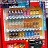

<ons-page id="second-page">
<head>
   <meta charset="utf-8">
<style>
.title{

  text-align: center;

  /**/
}


</style>

</head>
  <body class="tab2-body">
    <p class="tab2-top">遊んだ人履歴</p>
 <p class="tab2-title">いままであそんだひとたち</p>
<div class="tab2-member">
  <div class="tab2-icon">

  
  
  
  
  
</div> 
 <p class="date" >5月5日</p>
<a class="tab2-member-detail"href="tab2-2.html"><i class="fas fa-angle-right"></i>  このひとたちの趣味をみる</a>

</div>

<!--
<div>
<ul>
 <li>高橋<p>コーラを一気飲みしてゲップを我慢して名城線を一週乗る</p></li>
<li>ぴょん<p>自販機の写真を撮る</p></li>
<li>卍郎<p>自分の腕を痺れさせる</P></li>
 <li>渉<p></p></li>
 <li>エアー<p></p></li>
</ul>
</div>-->


  </body>


</ons-page>
